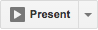

Watchpresenter is up and ready. You can start controlling your presentation from either your mobile phone or your smartwatch.
In order to start presenting:
- Open the app on your phone
- Start presentation on Google Slides by clicking on the button that looks like:

You are not logged in yet!
In order to proceed, click on the Log in button below.
Watchpresenter will use your Chrome account to log in